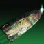

推荐者：
Guardian9944盘蜷用牢大直升机
 泰坦 · 缚丝 · 创意S29 · 凯旋纪念碑
泰坦 · 缚丝 · 创意S29 · 凯旋纪念碑
“塔台收到，今日晴转标弹风暴雨，允许起飞。”
适用环境
# 盘蜷用牢大直升机 推荐人：Guardian9944 描述：“塔台收到，今日晴转标弹风暴雨，允许起飞。” 更新：2026.9.13 场景：日常 分支：缚丝 强度：创意 核心：镖弹风暴 ## 职业 职业：泰坦#row:elements/class-abilities/分节/泰坦 超能：剑刃之怒#3574662354 星相：镖弹风暴#988980155、战争旗帜#988980154 碎片：守护丝线#4208512222、蜕变丝线#4208512221、狂怒丝线#4208512219、持续丝线#3192552690 手雷：抓钩#2470512752 近战：狂暴利刃#4094417246 职业技能：巍峨屏障#489583096 ## 武器 异域武器：蒙特卡洛#4068264807 传说武器：Ψ永恒 IV#135971347 | 涓流充能#1115162408、震颤反馈#3966416502 传说武器：翻新 A499#593808239 | 速射瞄准#957782887、聚合充能#3764420437 ## 护甲 异域护甲：无知希冀#4157369212 套装：克洛塔记忆#set:2620550053 2 件 × 克洛塔记忆#set:2620550053 4 件 头盔：拳到力来#3938489430、拳到力来#3938489430、拳到力来#3938489430 护臂：回天掌法#2447449706、回天掌法#2447449706、回天掌法#2447449706 胸甲：震荡阻尼器#3719981603、近战伤害抗性#1763668984、灼烧抗性#3194530172 腿部：宽恕#2793473444、恢复能量球#1039115606、复原#4087056174 职业物品：感应护盾#4081595582、强力吸引#11126525、连拳终结技#4004774873 ## 神器 神器：好奇之器 模组：群敌飞梭#1328115224、醒神丝线#3153265454、线织爆破#3116632775、元素聚合#3459646247、集群战术#3153265453、护盾粉碎#1533272844、纠缠罗网#2659604385 ## 六维 六维：生命 ~ ｜ 近战 200 ｜ 手雷 ~ ｜ 超能 ~ ｜ 职业 ~ ｜ 武器 ~ ## 注解 我方武装直升机已部署.jpg 本套配装在盘蜷随机buff中出现“致命近战充能”时可发挥完全实力，在有其余任意近战充能效率加成buff时次之 在日常中亦可通过队友和蒙特卡洛来加速近战充能（不建议于高难本使用，容易坠机XP）
职业
武器
神器模组
护甲
- 生命~
- 近战200
- 手雷~
- 超能~
- 职业~
- 武器~
注解
我方武装直升机已部署.jpg
本套配装在盘蜷随机buff中出现“致命近战充能”时可发挥完全实力，在有其余任意近战充能效率加成buff时次之
在日常中亦可通过队友和蒙特卡洛来加速近战充能（不建议于高难本使用，容易坠机XP）